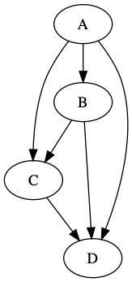

graph in rust using petgraph
2019-08-17
Getting started with Rust and the petgraph crate, I made a little program to write a graph in “dot” file format. Below is the rust and some command-line code to turn it into a png.

use petgraph::Graph;
use petgraph::dot::{Dot, Config};
use std::fs::File;
use std::io::Write;
fn main() {
println!("hello graph!");
let mut graph = Graph::<_, i32>::new();
graph.add_node("A");
graph.add_node("B");
graph.add_node("C");
graph.add_node("D");
graph.extend_with_edges(&[
(0, 1), (0, 2), (0, 3),
(1, 2), (1, 3),
(2, 3),
]);
println!("{:?}", Dot::with_config(&graph, &[Config::EdgeNoLabel]));
let mut f = File::create("example.dot").unwrap();
let output = format!("{}", Dot::with_config(&graph, &[Config::EdgeNoLabel]));
f.write_all(&output.as_bytes()).expect("could not write file");
}
output of cargo run:
hello graph!
digraph {
0 [label="\"A\""]
1 [label="\"B\""]
2 [label="\"C\""]
3 [label="\"D\""]
0 -> 1
0 -> 2
0 -> 3
1 -> 2
1 -> 3
2 -> 3
}
Generate PNG from DOT file
The dot command is part of graphviz, which I installed with brew install graphviz.
The following command creates a PNG file from the .dot file generated by Rust code above
dot -T png -O example.dot
The resulting PNG is displayed at the top-right of this post (next to the Rust code).
Special thanks to:
* mcarton’s help on stackoverflow for enlightening me on a bit of Rust nuance as I experimented with petgraph.
* rudifa’s post graphviz-on-the-mac